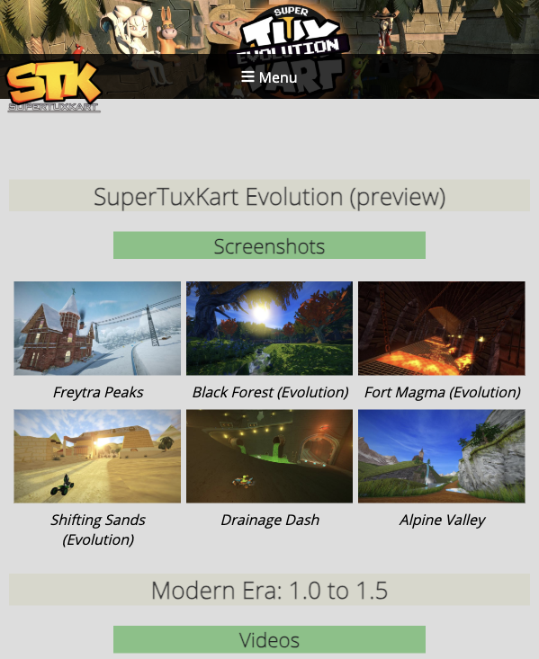

SuperTuxKart
Race, drift, and use power-ups.
SuperTuxKart is a free 3D kart racing game with tracks, characters, items, and multiplayer.
Back to games
Start
Easy First Steps
- Download and install the game.
- Start with a single race to learn the controls.
- Use items when racers are close to you.
- Practice drifting around corners.
- Try easier tracks before harder cups.